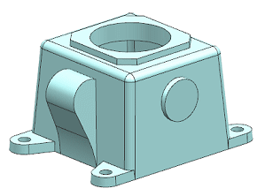
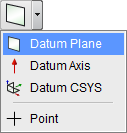
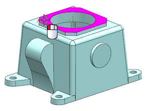
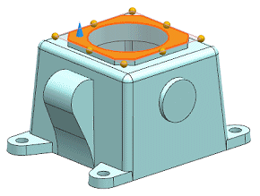
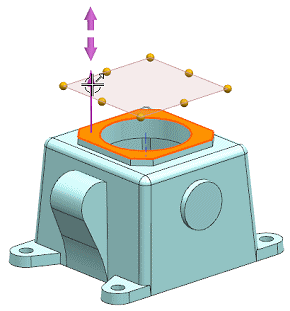
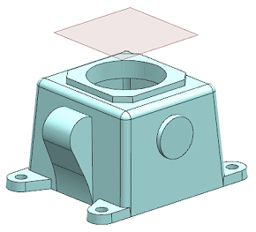

|
设计意图 |
在装配时，需要使用基准平面来将气缸头定位到压缩机底座上。 基准平面必须维持与压缩机底座中顶面35 mm 的距离。 |
打开 des13_compressor_datums_1。

在特征工具条上，点击基准/点下拉菜单中的基准平面。

在基准平面对话框中，确保类型是设置为自动判断。
选择实体顶面。

方向矢量指向面的法向，这个方向对于距离值来说是正向。

将距离手柄拖动至35。

您也可以在基准平面对话框的偏置组中输入距离值。
点击应用。
